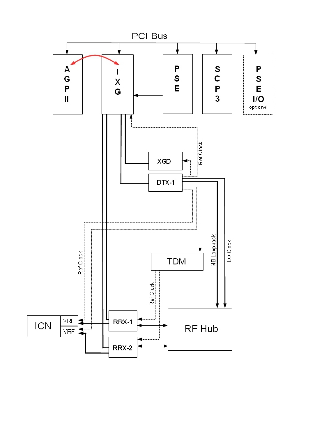

Operating Documentation
Direction 5670006, Rev# 1
Discovery MR750w GEM Service Methods
Module Version 4.0, Version Date 9/19/11
Operating Documentation |
Diagnostics >> System Function >> Acquisition/Pulse Generation >> Data Acquisition
Diagnostics >> Hardware Location >> PGR Cabinet >> CAM >> Data Acquisition
Illustration 1: IXG Board Level Diagnostic

The IXG Board Level Diagnostic tests the circuitry internal to the IXG board. The IXG board has two sections. One section provides DVMR link communications, and the other section communicates with XG2 power supplies and amplifiers (these components are not yet implemented, and the diagnostic does not test this section of the IXG board).
The test is run from the AGP board that accesses the IXG board over the cPCI bus.
The entire board is tested with the exception of the upper 6 fiber connectors (which is the section of the board used for communication to XG2 components).
Applications need to be loaded.
The IXG and AGP boards must be in the chassis. Other connections to the IXG board are optional (the test affects only the IXG board).
If the power has been cycled, a TPS reset is required. The TPS reset does not need to be successful.
If your system has the MNS option, Illustration 2 would show the ERF board on the PCI Bus. RRX-1 and RRX-2 would connect through the ERF board instead of the IXG board. The data acquisition for this diagnostic test performs the same for both configurations.
Illustration 2: IXG Block Diagram - Standard Configuration

Select IXG BLD from the Data Acquisition screen.
Click [Run].
Review the Test Results table to see if the diagnostic passed or failed.
Output values are judged pass or fail. In the event of failure, the details of the failure can be found in the GE System Log.